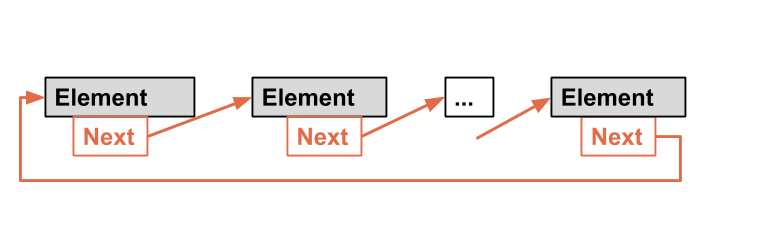
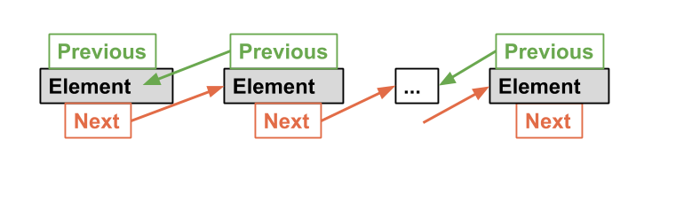
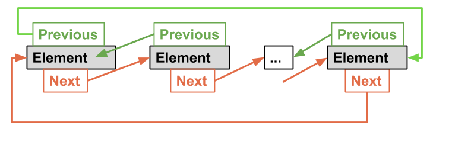

What's Lists?
A list is a popular data structure that can store data in sequential order. For instances, a list of available rooms, a list of cities, etc.Methods to Implement Lists
Commonly, there are 2 ways to implement a list.We can use arrays. An array is dynamically created to store the elements. If the capacity of the array is exceeded. We just need to create another larger array and copy all the elements from the current array to the new array.
Another way is using Linked List. A linked structure consists of multiple nodes, and each of them is dynamically created to store an element.
Hence, all the nodes are linked together to form a list.
ArrayLists and LinkedList
The array is dynamically created, if the capacity of the array is exceeded, another larger new array is created and all the elements from the current array will be copied to the new array.Circular Linked Lists
A circular, singly linked list is like a single linked list, except that the pointer of the last node will points back to the first node.
Doubly Linked Lists
A doubly linked list contains the nodes with two pointers, which are forward pointer and backward pointer. Forward pointer connects to the next node and the backward pointer connects to the previos node.
Therefore, a doubly linked list can be traversed forward and backward.
Circular Doubly Linked Lists
A circular doubly linked list is a type of doubly linked list, which the forward pointer of the last node connected to the first node, and the backward pointer of the first node connected to the last node.